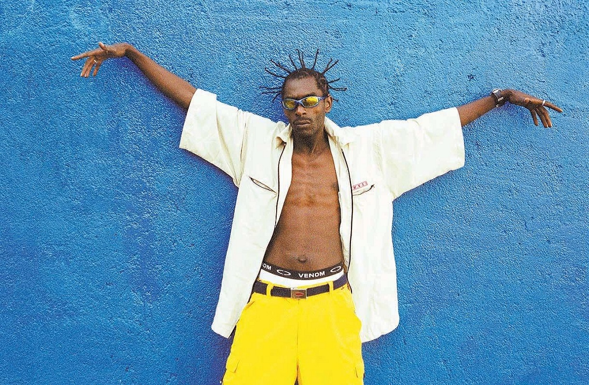
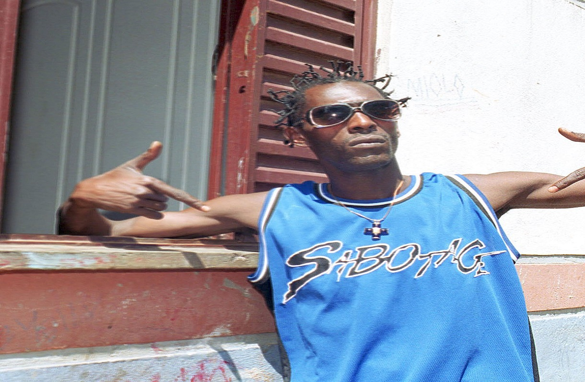
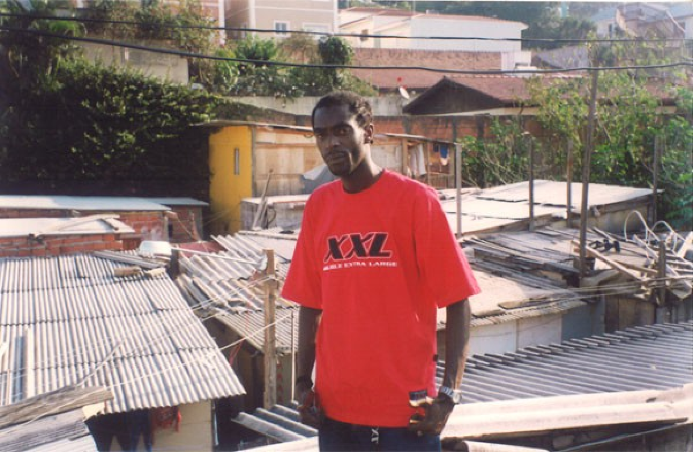
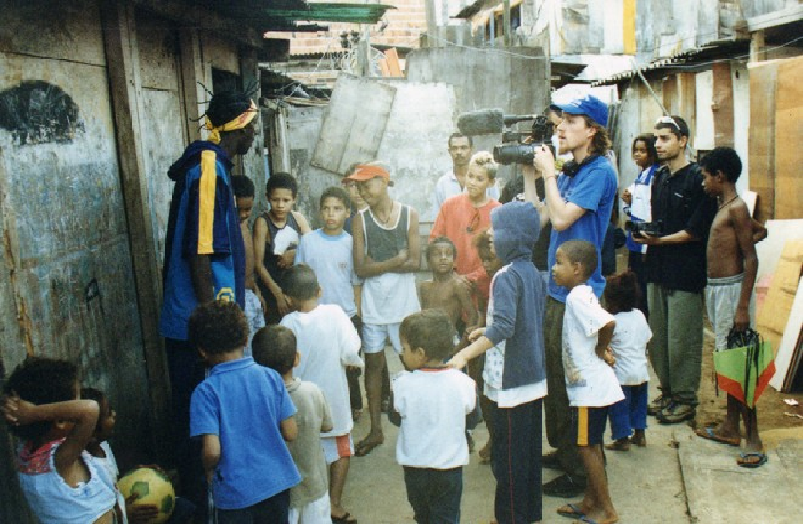
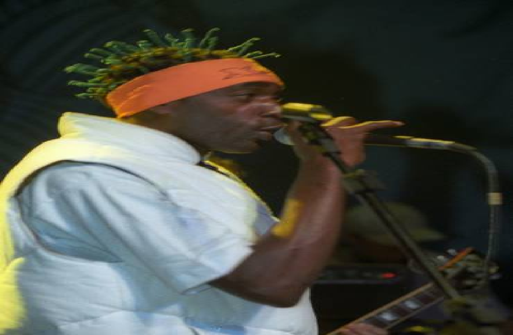
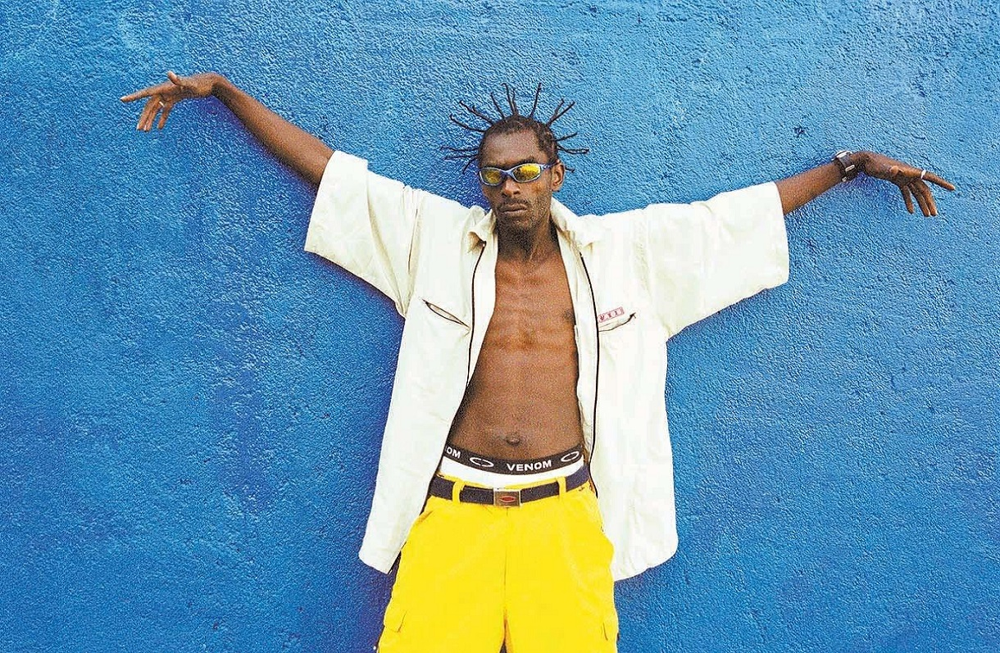
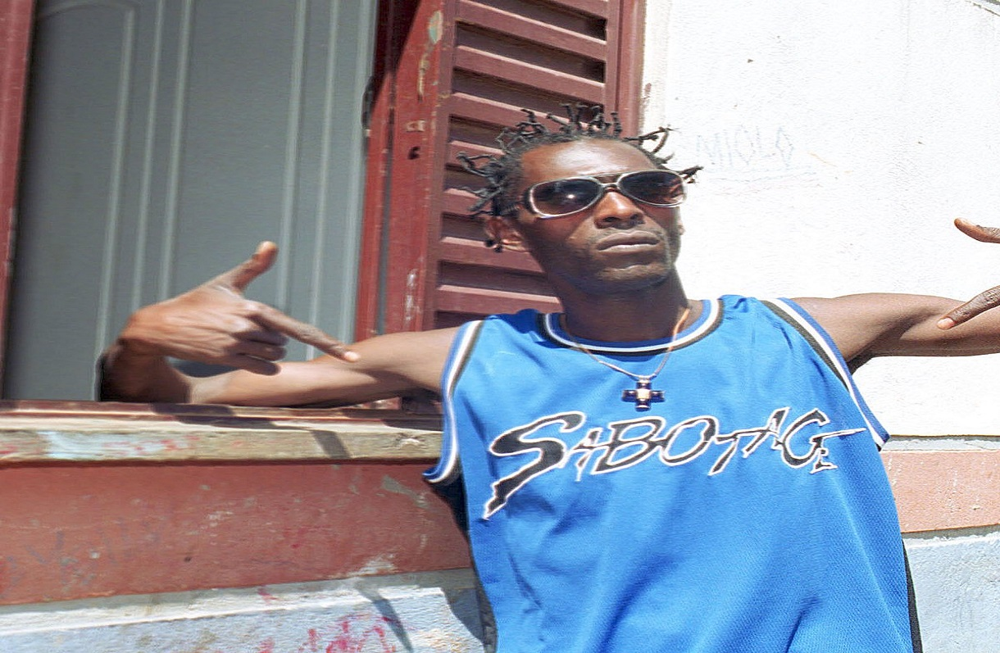
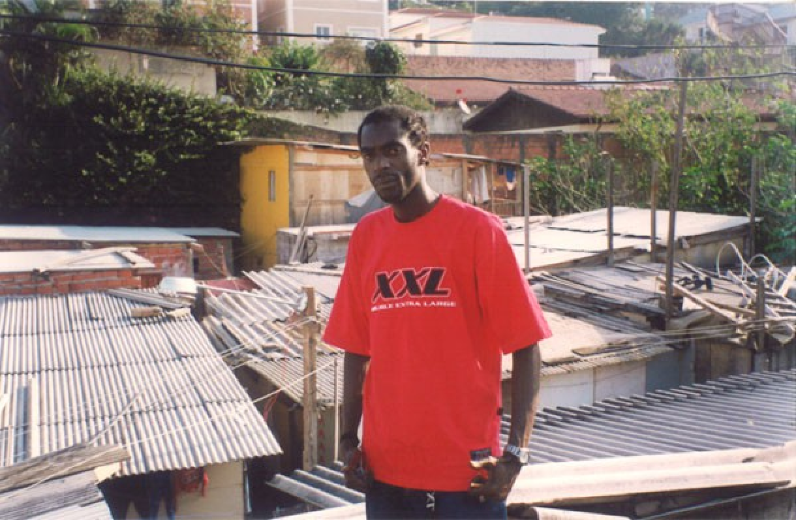
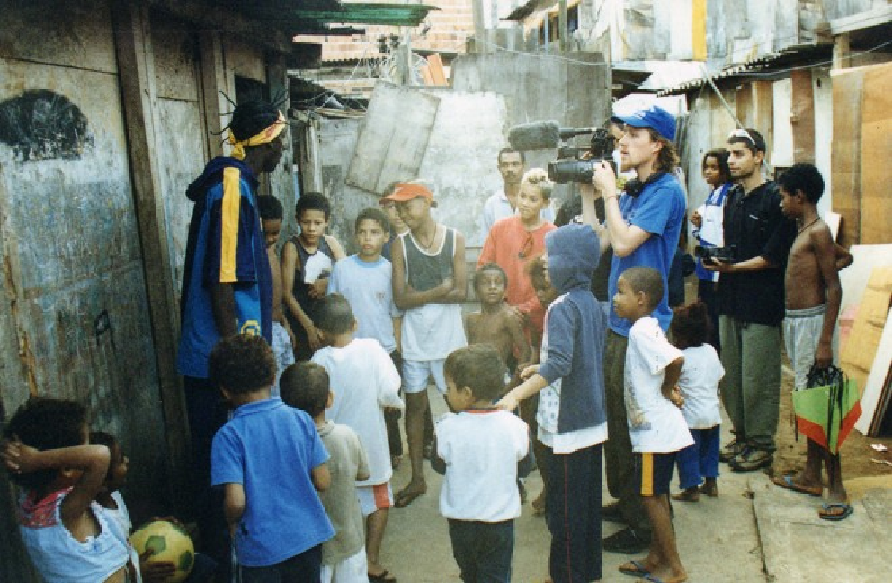
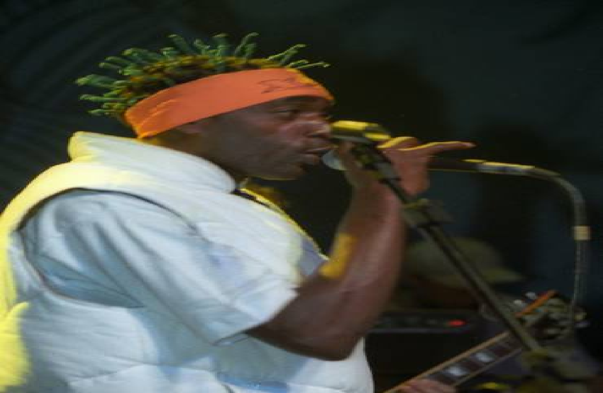

Mauro Mateus dos Santos, mais conhecido como Sabotage, foi um rapper, compositor e ator, considerado um dos nomes mais emblemáticos do rap nacional, Sabotage nasceu na zona sul de São Paulo (03/04/1973) criado na Favela do Canão na capital paulista, Sabotage perdeu um irmão assassinado depois de fugir da cadeia e o outro ao vício pro álcool, a mãe criou os três filhos sozinha. Ainda criança com apenas 8 anos de idade envolveu - se com o tráfico de drogas como olheiro do tráfico na favela do Canão no bairro do Brookin.
O gosto pela música surgiu quando ainda era jovem, quando andava com um caderno para escrever suas músicas, entre os anos de 1988 e 1989 ele se inscreveu em concursos de rap participando de shows do grupo RZO (Rapaziada Zona Oeste). E após a gravação de vários clipes, Sabotage começou a se destacar no mundo da música. No ano de 2000 Sabotage gravou seu primeiro álbum chamado "Rap é Compromisso".
Sabotage atuou em dois filmes, "O Invasor", onde participou da trilha sonora com cinco músicas, serviu de consultor sobre a cultura da periferia e atuou como ele mesmo. No filme "Carandiru", Sabotage interpretou o personagem "Fuinha" e gravou uma das músicas da trilha sonora. No ano de 2002 recebeu o prêmio Hutúz (Prêmio do Hip Hop brasileiro) na categoria revelação. Sabotage participou do programa Altas Horas da emissora Globo além de outras entrevistas em demais emissoras de televisão.
No dia 24 de janeiro de 2003, Sabotage foi assassinado com quatro tiros após deixar sua esposa no trabalho, o rapper deixou esposa, três filhos e um disco solo. O assasino foi condenado a 14 anos de prisão.
O nome artístico "Sabotage" se deu por conta de uma discussão entre ele e seu irmão "Deda", na adolescência Mauro Mateus do Santos pegou o RG do irmão dele para ir ao baile, logo o irmão disse para a mãe deles "Ele tá saindo escondido, tá fazendo sabotage".
Sabotage nunca esqueceu de suas origens, a vida de artista não tioru ele da favela, pelo contrário ele sempre procurava fazer algo bom a ela. Ele sempre transmitia mensagens aos jovens e umas delas ele dizia "Vida loka é caminho para cemitério", por ele ter tido convivência quando criança e também por ser um caminho fácil de entrar para os jovens da periferia.
Sabotage conta com rappers em suas músicas como: Chorão, Helião, Negra Li, Sandrão, Black Alien, Rappin Hood, Sombra, Bastardo, B Negão, os DJs e os produtores DJ Cia.
País da Fome - Álbum Sabotage
Mun'ra - Álbum Uma Luz Que Nunca Irá se Apagar
Canão Foi Tão Bom - Álbum Sabotage
Um bom Lugar - Álbum Rap é Compromisso
Rap é Compromisso - Álbum Rap é Compromisso
Na Zona Sul - Álbum Rap é Compromisso
Respeito é Pra Quem Tem - Álbum Rap é Compromisso
Cantando Pro Santo - Álbum Rap é Compromisso
No Brooklin - Álbum Rap é Compromisso